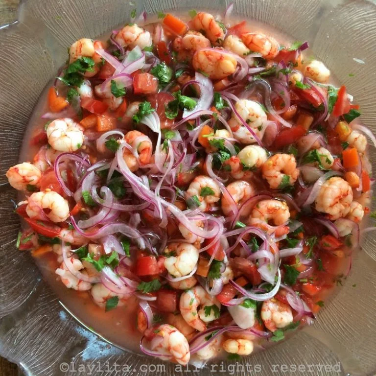

Ingredientes
2 libras de camarones ya cocinados pelados y sin venas
2 cebollas coloradas pequeñas cortadas en rodajas súper finas
4 tomates cortadas en rodajas finas o picadas en cubitos
1 pimiento verde o rojo - picado en cubitos opcional
15-20 limones el jugo
El jugo de una naranja
½ taza de salsa de tomate o tomate licuado/rallado para una versión mas fresca
1 manojo de cilantro o culantro picado finamente
Sal y aceite al gusto
Para servir:
Patacones o tostones
Chifles de plátano
Maíz tostado
Canguil (palomitas de maíz)
Ají criollo
Preparación
Frote las rodajas de cebolla con una cucharada de sal, luego enjuáguelas bien con agua fría.
Mezcle todos los ingredientes en una fuente de buen tamaño y deje reposar en la refrigeradora por lo menos durante una a dos horas. Pruebe y ajuste la sal si es necesario.
Sirva acompañado de ají o salsa picante, chifles, patacones o tostones, maíz tostado, o canguil (palomitas de maíz).